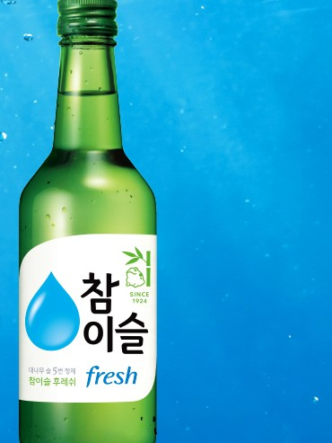

참이슬 후레쉬
No.1 스테디셀러 · 2026.06 15.7도 리뉴얼, 패키지 새단장

- 분류
- 희석식
- 도수
- 15.7도
- 출시
- 1998.10.19
- 제조사
- 하이트진로
- 지역
- 서울 · 경기
이름 유래
진로(眞露)를 순우리말로 풀이한 참이슬 라인의 저도수 주력 제품. 眞(진)→참, 露(로)→이슬. 브랜드 네이밍 컨설팅업체 크로스포인트(대표 손혜원)가 명명.상세 연혁
참이슬 브랜드는 1998년 10월 19일 첫 출시(2026년 5월 기준 누적 약 413억 병 판매, 1초당 약 47병). 2006년경 기존 라인(오리지널)과 저도수 '후레쉬' 라인으로 분화(자료에 따라 2007년설도 있음). 2025년 5월 페트(400·500·640ml·1.8L)·오리지널(640ml·1.8L) 패키지를 대나무잎 곡선 줄무늬 디자인으로 새단장. 부드러운 목넘김 중심의 대중형 라인.변경 이력
1998.10
23도로 첫 출시
2004
21도로 인하
2006
저도수 '참이슬 후레쉬' 라인 출시
2007
19.5도로 인하
2012.01
'후레쉬' → '참이슬', '오리지널' → '참이슬 클래식'으로 명칭 교체(2017년경 후레쉬/오리지널로 환원)
2012
19도로 인하
2014.02
18.5도로 인하
2014.11
17.8도로 인하
2018
17.2도로 인하
2019
17도로 인하
2020.05
17도 → 16.9도로 인하
2021.08
16.9도 → 16.5도로 인하
2024.02
16.5도 → 16도로 조정(브랜드 전면 리뉴얼)
2026.06
16도 → 15.7도로 조정
스페셜 에디션
2017
'참이슬 제주' — 돌하르방·한라산 등 제주 상징을 담은 첫 제주 한정 라벨
2023.07
'이슬방울 에디션' — 이슬방울 캐릭터 4종 라벨을 랜덤 적용한 한정판
2024.12
'오징어 게임2 스페셜 에디션' — 넷플릭스 '오징어 게임' 시즌2 캐릭터 라벨
2025.05
'제주 에디션' — 돌하르방과 두꺼비, 한라봉과 이슬방울 캐릭터를 접목한 제주 한정 라벨(두 번째)
2025.06
'테라·참이슬 오징어 게임 에디션' — 시즌3 협업, 총 5,000만 병 한정
2026.05
'제주 에디션' — 돌하르방 두꺼비와 유채꽃밭·한라산·돌담길을 담은 3종 라벨, 약 4개월간 제주 지역 식당·주점 한정 판매
2026.06
진로×LA다저스 한정판 — 참이슬 후레쉬+에이슬 6종을 묶은 미국(캘리포니아 남부) 한인마트 전용 세트, 다저스 협업 소주잔 포함
2026.07
'이슬라이브페스티벌 에디션' — 9.12 인천 송도달빛축제공원 참이슬 뮤직 페스티벌 연계, 이슬방울·두꺼비 캐릭터 공연 일러스트 패키지
2026.07
'부산 에디션' — 광안대교를 담은 여름 성수기 부산 지역 한정 라벨